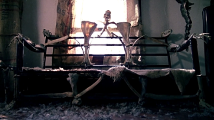

Ero solito parlare con i mobili
Sono cresciuto in una zona dove le proprietà sono così grandi e le famiglie sono così ricche, che costruiscono palazzi e mura che si inseriscono nei loro paradisi privati - non interagiscono mai con i loro vicini se non per una strana coincidenza. Sono stato educato a casa fino all'età di 7 anni, che è dove finisce questa storia.
Ma prima, inizia all'età di 4 anni, quando posso ricordare per primo com'era la mia infanzia. Da ragazzo, pensavo che rimanere isolati nella proprietà della tua famiglia fosse quello che facevano tutti i ragazzini. Ogni volta che uno dei miei genitori usciva chiedevo di unirmi a loro, ma scuotevano la testa spiegando che solo gli adulti se ne andavano di casa e solo in situazioni di estrema gravità. A parte questo, non ho mai voluto giocattoli o attività e ho sviluppato ciò che i miei genitori hanno descritto come una fantasia selvaggia. Ho iniziato a creare relazioni con i nostri mobili per la casa, trascorrendo giornate conversando con loro e nominando ognuno di loro.
I miei genitori sembravano sbizzarrire la mia immaginazione aumentando sempre più la quantità di mobili in casa. Mio padre si era sempre considerato un po 'un tuttofare e spesso mi spiegava il suo amore per la costruzione di cose e come aveva fatto a mano alcuni pezzi.
E così sono nati 3 anni di profondi rapporti emotivi che ho sviluppato con i mobili nella mia casa. Arnold era il morbido sofà del soggiorno che sembrava muoversi su e giù mentre mi stavo reclinando su di lui leggendo i miei libri. Sophia era il mio letto che si spostava così leggermente oscillando avanti e indietro mentre mi addormentavo, a volte potevo persino sentirla canticchiare dolcemente. Quando posavo la testa sul tavolo nella mia stanza, Claudio, sentivo palpitazioni ritmiche al mio battito cardiaco. Parlavo costantemente con Theodore, una sedia piuttosto piccola che mi rispondeva molto, emettendo suoni ronzanti e strane vibrazioni anche quando non era pronta. Ma soprattutto amavo Gladys, il più grande e morbido divano della casa, quello che sembrava condividere il mio respiro. Tutti i mobili erano così morbidi, così caldi e così vivi per me.
È strano quanto velocemente le cose possano cambiare. Era un lunedì, il mio settimo compleanno e i miei genitori erano nel loro laboratorio per costruire un nuovo mobile come il mio regalo. Una donna si era persa guidando attraverso la città e nonostante i nostri cancelli fossero chiusi ermeticamente, era riuscita a farsi strada. Bussò leggermente alla porta e io saltai su, non avendo mai sentito qualcuno avvicinarsi alla casa prima. Quando aprii la porta la sua espressione cambiò in orrore. Annusò l'aria e imbavagliò. Poi lei mi prese e cominciò a correre.
Domani compirò 27 anni e mi sono passato in mente se dovevo sedere nella galleria mentre i miei genitori venivano giustiziati. I titoli dei giornali li avevano etichettati come "peggiori di Karl Brandt", dopo aver riconfigurato 167 persone al mio settimo compleanno. Non sono mai stati assassini di marca perché nessuno è morto, ma era molto peggio di così. 167 persone per fare 71 pezzi di mobili, sono 664 arti riuniti in formazioni che nessuna mente dovrebbe evocare. A volte le persone pensano che io sia un buddista ... non ci sono mobili nel mio appartamento.
Entrambi i miei genitori erano chirurghi e io ero solito parlare con i mobili.

(Recuerda que las respuestas deben escribirse en ingles)
Inviare
Ritorno